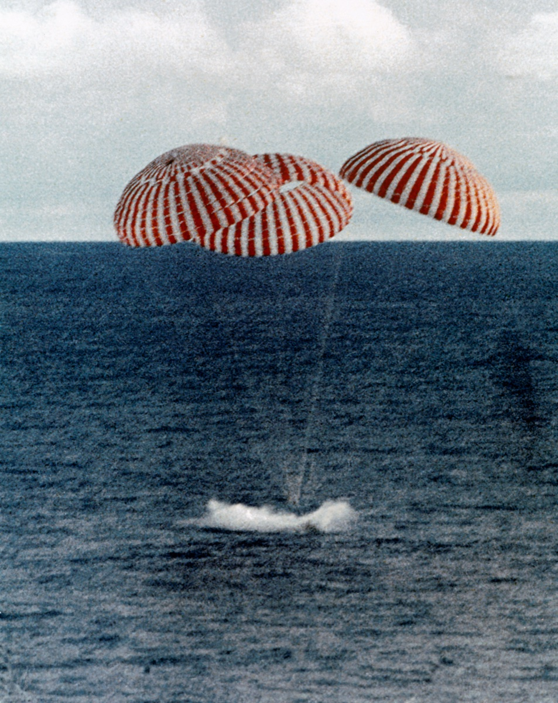

Splashdown

Three Good Chutes
Odyssey swung down under its three orange-and-white main parachutes, slowed to a gentle 22 mph. Cameras aboard the recovery ship USS Iwo Jima found the capsule in the sky and carried the picture live to a watching world. In Mission Control, everyone was on their feet.
"Odyssey, Houston. We show you on the mains. It really looks great." — CAPCOM Joe Kerwin, as the parachutes appeared on the big screen
GET 142:54:41 — Impact
Six days after launch — after an explosion, a slingshot around the Moon, and a freezing ride home in a lifeboat built for two — Odyssey hit the South Pacific southeast of American Samoa and floated upright in the swells.
- Landing accuracy: about one mile from the target point
- Recovery ship: USS Iwo Jima, roughly four miles away with helicopters already airborne
- Total mission time: 5 days, 22 hours, 54 minutes, 41 seconds
✅ ALL THREE ASTRONAUTS ALIVE
In Mission Control: cheering, cigars, flags — and tears from people who hadn't slept in days.
The crew was safe. But they were still sealed inside a capsule bobbing in the open ocean. Getting them out was the Navy's job now.